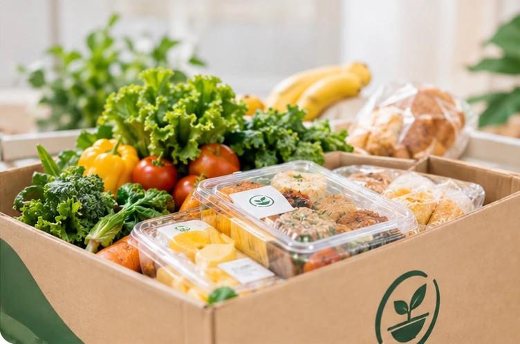
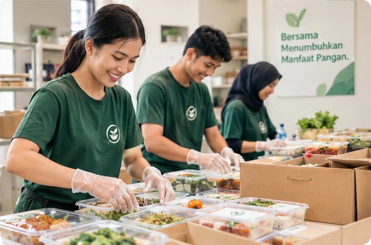
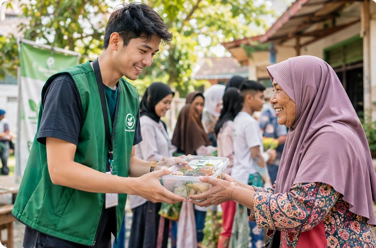

Surplus Pangan, Tumbuh Jadi Kebaikan.
Tumbuh Pangan menghubungkan bisnis yang memiliki surplus makanan layak konsumsi dengan organisasi sosial dan komunitas, agar pangan dapat disalurkan dengan lebih mudah, aman, dan tepat sasaran.
Kolaborasi sederhana untuk manfaat yang lebih luas.
Roti & Kue

Pangan Segar, Terverifikasi, dan Siap Disalurkan
Setiap donasi dikemas dengan rapi dan terdata: mulai dari roti harian toko kue hingga surplus bahan segar dari pasar dan katering. Seluruhnya dipilah dengan standar kelayakan pangan yang jelas.
Lebih Terorganisasi
Informasi surplus dan proses penyaluran tercatat rapi dalam satu sistem terpusat.
Lebih Tepat Sasaran
Donatur dan mitra dipertemukan berdasarkan kebutuhan, jarak, dan kecocokan kapasitas.
Dampak Lebih Terukur
Distribusi yang telah dikonfirmasi dirangkum menjadi data dampak nyata dan transparan.
Pangan Berlebih Masih Bisa Membawa Manfaat.
Dalam operasional bisnis makanan harian, surplus pangan dapat terjadi secara wajar karena dinamika produksi, fluktuasi permintaan, atau standar porsi. Tumbuh Pangan hadir untuk mempertemukan makanan layak konsumsi ini dengan mitra yang siap menyalurkannya, sebelum terbuang sia-sia.
Surplus Lebih Terlihat
Informasi jenis, jumlah, kondisi, dan waktu pengambilan tersedia dengan jelas sehingga calon mitra dapat langsung menilai kesesuaian.
Penyaluran Lebih Terarah
Rekomendasi membantu menemukan mitra berdasarkan kebutuhan, kapasitas, waktu, dan lokasi untuk meminimalkan keterlambatan serah terima.
Proses Lebih Terpantau
Status permintaan dan konfirmasi penyaluran membantu menjaga kejelasan proses dari saat didaftarkan hingga diterima komunitas.
Menghubungkan Kelebihan dengan Kebutuhan.
Tumbuh Pangan hadir untuk membantu membangun ekosistem penyaluran surplus pangan yang lebih kolaboratif. Kami percaya bahwa langkah kecil—mencatat surplus, menemukan mitra yang sesuai, dan memastikan penyaluran—dapat menjadi bagian dari perubahan yang lebih besar.
Kami tidak memandang surplus pangan sebagai sisa yang harus dibuang terburu-buru, melainkan sebagai potensi berharga yang memerlukan jembatan komunikasi yang aman, bermartabat, dan teratur.

Kolaborasi Lintas Komunitas
Menjembatani sektor usaha kuliner, organisasi kemanusiaan, yayasan sosial, dan relawan lokal dalam satu jaringan saling dukung.
Keamanan Pangan Sebagai Prioritas
Menekankan transparansi kondisi makanan, batas waktu layak konsumsi, dan petunjuk penyimpanan demi perlindungan seluruh pihak.
Transparansi Proses dan Dampak
Setiap kilogram dan paket pangan yang tersalurkan diverifikasi bersama, menghadirkan catatan dampak yang jujur tanpa klaim fiktif.
Dirancang untuk Mempermudah Penyaluran.
Solusi fungsional yang fokus pada efisiensi waktu serah terima makanan dan akurasi pencatatan.
Smart Food Matching
Membantu merekomendasikan mitra berdasarkan lokasi, jumlah pangan, waktu pengambilan, dan kebutuhan.
Food Safety Gate
Mendukung pencatatan kondisi, batas waktu konsumsi, penyimpanan, dan informasi penting sebelum penawaran dipublikasikan.
Surplus Insights
Membantu donatur melihat pola surplus dari data yang tercatat, sehingga perencanaan dapat terus diperbaiki.
Impact Dashboard
Merangkum penyaluran yang telah dikonfirmasi, jumlah paket atau porsi, dan aktivitas kolaborasi.
Lima Langkah, Satu Dampak Bersama.
Proses sederhana dan transparan untuk memastikan makanan layak sampai ke pihak yang tepat.
Donatur Mencatat Surplus
Donatur memasukkan jenis pangan, jumlah, kondisi, waktu pengambilan, lokasi, dan informasi keamanan yang relevan.
Sistem Membantu Mencocokkan
Platform merekomendasikan mitra berdasarkan kebutuhan, kapasitas, waktu, dan jarak.
Mitra Mengajukan Permintaan
Mitra memilih penawaran yang sesuai dan mengirimkan jumlah serta rencana pengambilan.
Jadwalkan dan Salurkan
Donatur menyetujui permintaan; kedua pihak menyepakati waktu dan proses serah terima.
Konfirmasi dan Catat Dampak
Kedua pihak mengonfirmasi penyaluran agar transaksi tercatat selesai dan masuk rekap dampak.
Penyaluran Tertib dan Bermartabat
Makanan berlebih diserahkan langsung kepada penerima manfaat lansia, keluarga prasejahtera, dan panti asuhan melalui antrean yang teratur serta proses yang penuh rasa hormat.

Setiap Penyaluran Punya Arti.
Data dampak dihitung dari penyaluran yang telah dikonfirmasi sesuai metode pencatatan platform.
Pangan Tersalurkan
Data tampil setelah penyaluran terkonfirmasi
Paket / Porsi Tersalurkan
Data tampil setelah penyaluran terkonfirmasi
Penyaluran Terkonfirmasi
Data tampil setelah penyaluran terkonfirmasi
Mitra Berkolaborasi
Data tampil setelah penyaluran terkonfirmasi
Komitmen Transparansi: Kami tidak menampilkan angka fiktif sebelum pencatatan serah terima pangan terverifikasi secara nyata di lapangan.
Mari Tumbuhkan Manfaat dari Setiap Pangan.
Bergabunglah sebagai donatur pangan atau mitra penyalur untuk mewujudkan redistribusi makanan yang aman, teratur, dan bermartabat.
Donatur Pangan
Untuk restoran, toko roti/kue, katering, hotel, supermarket, dan UMKM kuliner yang ingin mengalirkan surplus makanan layak santap ke komunitas yang membutuhkan.
- Pencatatan surplus makanan cepat & terjadwal tanpa repot
- Prosedur Food Safety Gate menjaga standar kelayakan
- Laporan data serah terima dan taksiran dampak terverifikasi
Mitra Penyalur
Untuk yayasan sosial, panti asuhan, dapur umum mandiri, kelompok relawan, dan komunitas akar rumput yang memiliki jalur distribusi langsung kepada warga yang membutuhkan.
- Menerima tawaran surplus pangan yang sesuai kapasitas komunitas
- Jadwal penjemputan dan rute serah terima terkoordinasi jelas
- Penyaluran menjaga rasa hormat dan martabat penerima manfaat
Punya pertanyaan seputar kemitraan atau integrasi?
Tim koordinasi Tumbuh Pangan siap berdiskusi secara langsung melalui email resmi.
Pertanyaan yang Sering Diajukan.
Jawaban lugas dan transparan mengenai operasional platform Tumbuh Pangan.